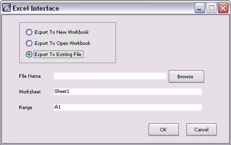

The Excel Interface window allows users to export data to a new, open, or existing Excel workbook or file.
Note that if data to be exported is greater than the Excel columns available, which is from column A to IV, the first row of data will only be exported. For example, if data to be exported is made up of 10 rows and the columns are more than what Excel can accommodate, only the first row of data and the available column for that data will be displayed.
To access this window:
1. Open any configurable table in the system. For example, the AdHoc Query Viewer.
2. Select Reporting à MS Excel. The following window displays:

None.
This window contains the following buttons:
Button |
Description |
Export to New Workbook |
Exports data to a new Excel workbook. |
Export to Open Workbook |
Exports data to the workbook and worksheet specified in the “Workbook” and “Worksheet” fields, respectively. Note that export behavior may vary for different versions of MS Excel. |
Export to Existing File |
Exports data to an existing Excel file. |
Browse |
Opens a file browser allowing the user to select the Excel file to export data. This button displays only when the “Export to Existing File” option is selected. |
OK |
Exports data to Excel and closes the window. |
Cancel |
Closes the window without exporting data. |
This window contains the following fields:
Field |
Description |
Workbook/File Name |
The name of the Excel workbook/file data will be exported to. Displays only if exporting to an open workbook or existing file. |
Worksheet |
The name of the worksheet data will be exported to. |
Range |
Input the cell number of the worksheet where the first column and first row of the data table will be exported. For example, if B1 is specified, the first column and first row of data will be exported to the second column (i.e., column B) and first row (i.e., row 1) of the Excel worksheet. |
Export without Formatting |
Removes formatting when imported to Excel worksheet cell. For example, in cases where date/time is exported, this checkbox should not be checked off, otherwise the corresponding cell will display the date and time in the incorrect format. |